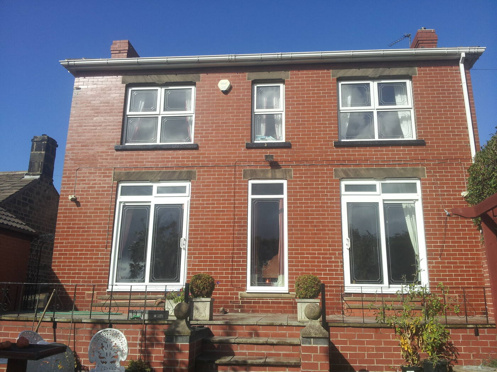

Re-Pointing Project
TypeBuilding
Photos7
AreaBarnsley & South Yorkshire

About the project
A grind out and re-pointing project. First few pictures depict the existing defective mortar.
The middle pictures detail and easy scaffold system which is quick to erect and dismantle, but meets all the Health and Safety Regulations. The speed of the scaffold system eliminates the need for a full property scaffold which means the savings can be passed on to the Customer.
Last pictures show the neatness of the newly pointed brick work joints.